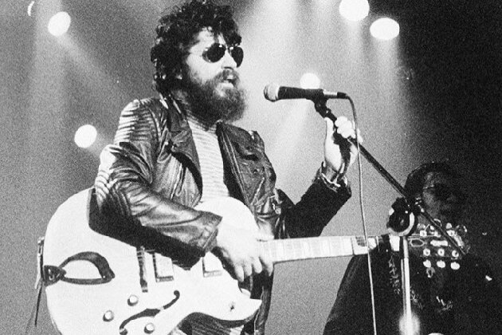
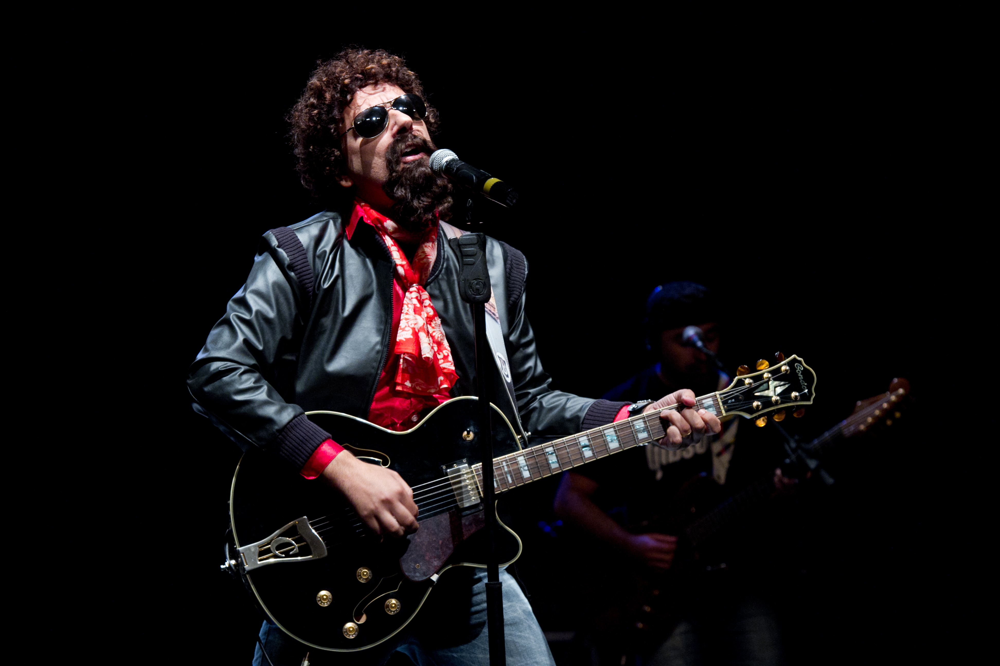
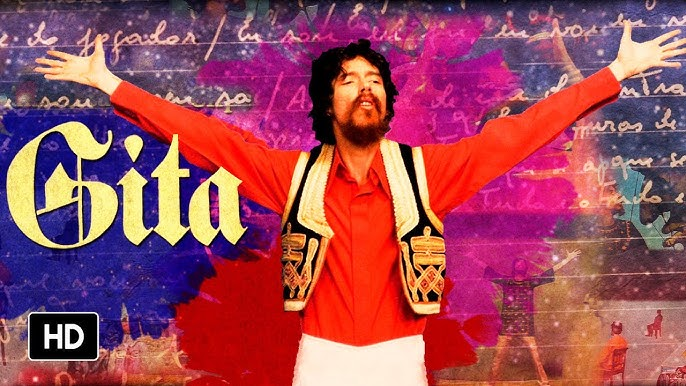

Biografia
Raul Seixas foi um cantor, compositor e produtor musical brasileiro, considerado um dos pioneiros do rock no Brasil. Nascido em 28 de junho de 1945, em Salvador, Bahia, Raul misturou rock com elementos da música brasileira e filosofia alternativa.
Com seu estilo único, ele se tornou um ícone cultural e uma referência para gerações de músicos. Seu álbum mais conhecido, *Krig-Ha, Bandolo!*, lançado em 1973, teve enorme impacto na cena musical brasileira.
Discografia
- 1973 - Krig-Ha, Bandolo!
- 1974 - Gita
- 1975 - Novo Aeon
- 1982 - Raul Seixas
- 1989 - A Panela do Diabo (com Marcelo Nova)
- 1993 - O Sonho do Brasil
Galeria de Fotos



Contato
Entre em contato para mais informações sobre Raul Seixas: contato@raulseixas.com